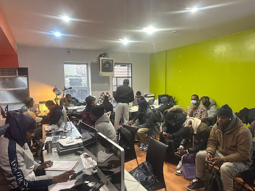
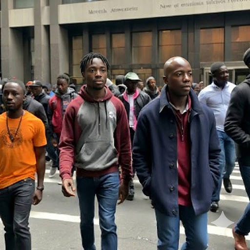

About Wanllan Mi Wanlle

Wanllan Mi Wanlle (WMW), meaning "Help Me, I Help You" in Fulani, is a mutual aid initiative that supports recent West African migrants as they rebuild their lives in New York City.
WMW operates from the Brooklyn Commons space on Flatbush Avenue and through an active Telegram community of more than 2,000 members. WMW helps participants navigate the complex, rapidly changing immigration system while fostering a strong sense of belonging, solidarity, and mutual support to combat isolation and uncertainty.
The community welcomes everyone. A growing network of allies, including longtime New Yorkers, volunteers, and partner organizations, contributes time, resources, and expertise to strengthen WMW's reach and sustainability. The program also benefits from ongoing guidance and collaboration with Co-Counsel NYC, Roots Cafe and other community partners.
Support within WMW is peer-driven and community-centered. Volunteers known as Navigators provide free assistance across a wide range of needs while also serving as trusted listeners and mentors. Navigators can sign up with this form. Services include helping members access public benefits such as Medicaid, state and NYC identification cards, and English-language programs, as well as referrals to additional community resources.
At this time, WMW is placing particular emphasis on supporting members through the asylum process. This includes assistance with understanding pretermission, preparing immigration filings and motions, and navigating pathways toward permanent residency.
Members also receive support for civil and criminal legal matters, unfair medical bills, employment authorization applications, small-business aid, and housing information, including apartment-sharing opportunities.
Beyond services, WMW prioritizes community building. Members regularly gather for soccer games in Caton Park, for monthly shared meals, and for collective events at the office, creating spaces of connection, dignity, and mutual care where newcomers can find both practical support and a true sense of community.
Community Impact
The strength and relevance of Wanllan Mi Wanlle are reflected in its rapid growth. With more than 2,000 active members, our community continues to expand, demonstrating the power of mutual support and the urgent need for accessible, community-driven assistance. Members and volunteers come together to support one another, demonstrating how collective action can address real, immediate challenges facing newcomers. WMW follows in the historical New York City tradition of welcoming each successive generation of immigrants to acculturate and integrate into American society and economy while retaining the best of their national and family traditions and values.

Staffing & Administration
Wanllan Mi Wanlle (WMW) is a fiscally sponsored project of the nonprofit Philanthropy Leaders. The initiative is led by Abdulai Bah, Soulymane Barry, and Yacine Bah, supported by a dedicated and growing network of volunteers who contribute their time, skills, and commitment to serving the community.
Services We Offer
Unfair Medical Bills? We Can Help.
Received a hospital or doctor's bill that should have been covered by insurance, or one that seems unexpectedly high? You are not alone. Our volunteer Medical Navigator works directly with hospitals and insurance providers to review, dispute, and negotiate bills on your behalf.
In just the past month, we have helped members eliminate thousands of dollars in medical debt. If a bill doesn't look right, let us help you challenge it.
Medical Assistance Program
Get hands-on support to apply for Medicaid. We can help you understand eligibility requirements, complete application forms accurately, gather supporting documents, and respond to any follow-up requests. Our goal is to make sure you receive the healthcare coverage you qualify for without unnecessary delays.
Driver's License and State ID Support
Obtain help navigating the process of getting a state ID or driver's license. We can help you to understand eligibility rules, gather required documentation, including proof of address, and prepare for appointments so applications are complete and properly submitted.
Change of Address and Venue Assistance
Keeping your address updated is critical, especially in immigration cases. We help members update their address with immigration agencies and other government offices, and complete post office change-of-address requests.
For those moving to a new state, we assist with filing motions to change the venue of immigration proceedings so cases can continue in the correct jurisdiction.
Work Permit Application Support
Our Work-Permit Assistance program provides document preparation support for individuals seeking employment authorization. We help you understand eligibility requirements, complete your work permit application accurately, prepare required payment forms, and organize your submission to avoid delays or rejection.
Small Business Assistance
If you are an entrepreneur preparing meals for catering or running another type of small business, WMW can connect you with training and even cash resources to grow your business through our partnership with Accompany Capital.
Legal Consultation and Asylum Application Support
Through our partnership with Co-Counsel NYC, we connect individuals with legal consultations and provide structured support throughout the asylum process. Navigating asylum can be overwhelming, especially with strict deadlines and detailed documentation requirements. We help bring clarity and organization to the process.
Our support includes organizing evidence, preparing detailed sworn declarations, completing required forms, and assembling a complete and properly formatted filing packet. Our goal is to help applicants present their story clearly, accurately, and with confidence. This service provides structured preparation support in collaboration with legal professionals.
Marriage Support Services
Getting married is a joyful milestone, and we are here to help make the process smooth and stress-free. We assist members preparing to get married by guiding them through the marriage license application process, gathering required documents, and scheduling appointments at the appropriate city offices or clerk's offices.
We also provide guidance on what to expect during the civil ceremony and help coordinate logistics so that everything is completed and recorded properly.
For couples who wish to celebrate a religious ceremony, we connect them with trusted faith-based organizations and community leaders who can officiate and support their union in accordance with their traditions.
New Baby Support and Passport Assistance
Welcoming a new baby is an exciting and important moment. We support parents by helping them complete passport applications for their American-born children, ensuring all required documents are properly gathered, including birth certificates, identification, and parental consent forms.
We assist with scheduling the in-person passport appointment and preparing families for what to bring so the process goes smoothly. Our goal is to make sure your child's documentation is secured quickly and correctly.
Traffic Ticket Assistance
Traffic tickets can quickly become expensive and stressful if not handled properly. We help members understand their options and take timely action. Our support includes scheduling court hearings, entering pleas, paying camera tickets or other traffic violations, and preparing for hearings. When additional legal representation is needed, we refer members to trusted traffic attorneys for further assistance.
Referral to Personal Injury Attorneys
If you are involved in a car accident, we can connect you with experienced personal injury attorneys. We also provide interpretation support during consultations when needed, so you can clearly understand your rights and communicate effectively with your attorney.
Join Us
Wanllan Mi Wanlle is an inclusive community where everyone is welcome. Join us to access vital information, practical resources, and a strong network of mutual support. Stay informed, stay connected, and work alongside us as we build a more secure and hopeful future together.
Find us on Telegram: https://t.me/+UR6jXiseak9jYTRh
Email: info@wallanmiwanllle.org
Find us on TikTok: https://www.tiktok.com/@wallanmiwalleh_nyc